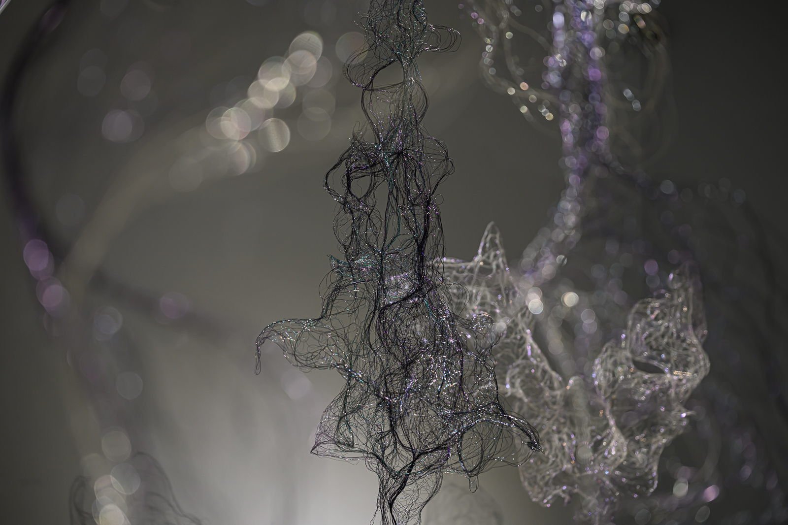
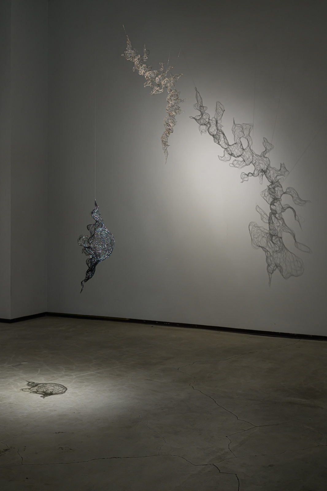
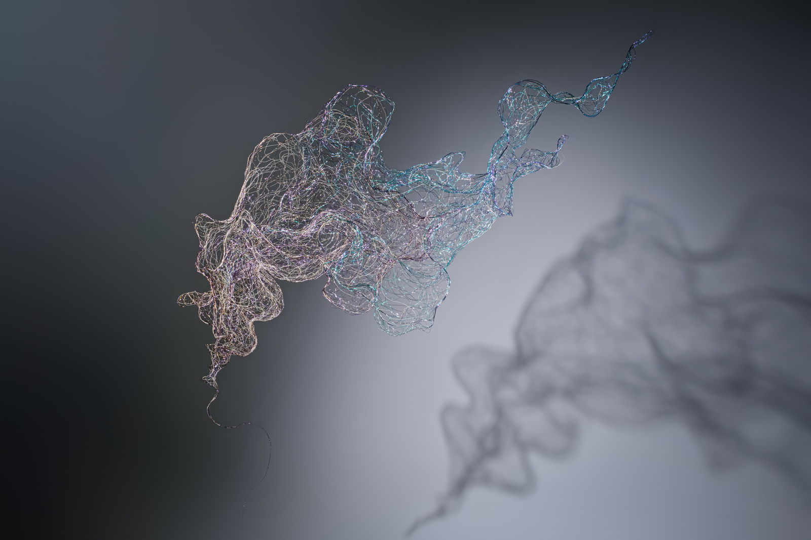
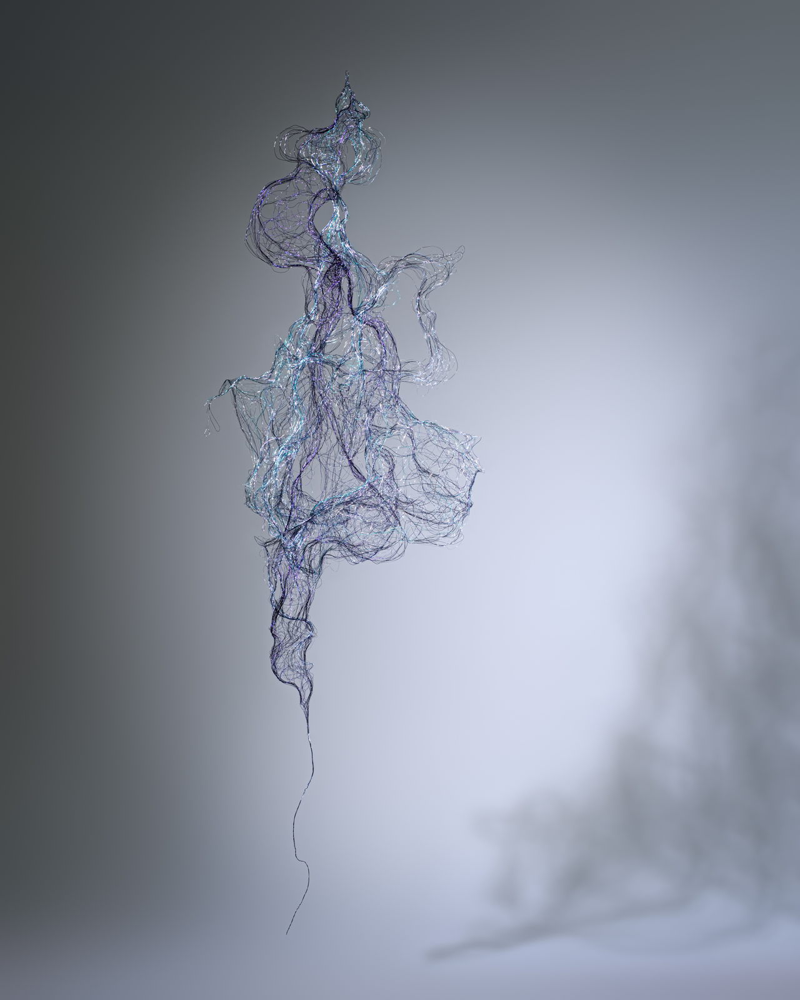

Curated by Jenning KING, Jenny LEE
If sunrise opens our eyes to the world around us, our gaze turns inward to our inner selves when night falls. “Night, as a pure depth, has no sides. It envelops us, making us aware of our fragility, drawing us back to a primal realm of experience that escapes the structured order of daylight,” writes WU Yu in the preface to Night: Philosophy After Dark (by Jason Bahbak Mohaghegh). As the sun sinks below the horizon, the weight and structure of the day begin to wane. By midnight, silence thickens, darkness engulfs all, and time seems to hold its breath. For some, however, this is the hour of awakening. They engage in quiet conversations with their souls in the stillness of the night or unearth metaphors that mirror reality in their dreams. Meanwhile, night wanderers drift beneath an Impressionist sky, moving endlessly and aimlessly to fill the sleepless hours.
This is an exhibition about the night—a time and space where thoughts, emotions, and desires quietly shimmer. Eight artists share their reflections: “Julia HUNG–Wisps and Whispers,” “CHOU Kai-Lun–In Faint Light,” “Emily WANG—Rehearsal in Liminality,” “WANG Yahui–A Poem,” “CHEN Yin Ling—The Quiet Eye,” “Chihung LIU–Placebo,” “CHIU Chen-Hung–Night and Soul,” and “Chihoi–Halogen: The Pearl.” Their visions are stars flickering in a darkened vault beyond the reach of searchlights—a constellation of whispers that echo across eons.
Wisps and Whispers
I imagine the night as I weave, with threads as delicate as drifting mist. Suspended in the still air, they form tiny universes cloaked in darkness, where they are both observers and observed.
Darkness softens everything it touches, while silence sharpens the subtlest details and thoughts.
Light fades into a pale brilliance, softly illuminating the flow of time.
In the shadows, all things merge and silently transform, and the rhythms of life are hidden, inaudible.
The boundaries between dream and reality, presence and absence, blur and nearly diffuse. In the depths of darkness, when time feels frozen, it seems to cradle eternity—yet these universes slip away like phantoms, vanishing as quickly as they appear.